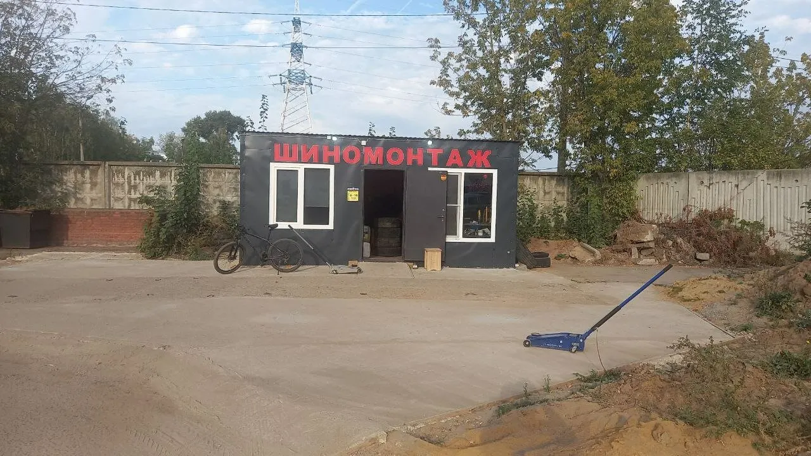
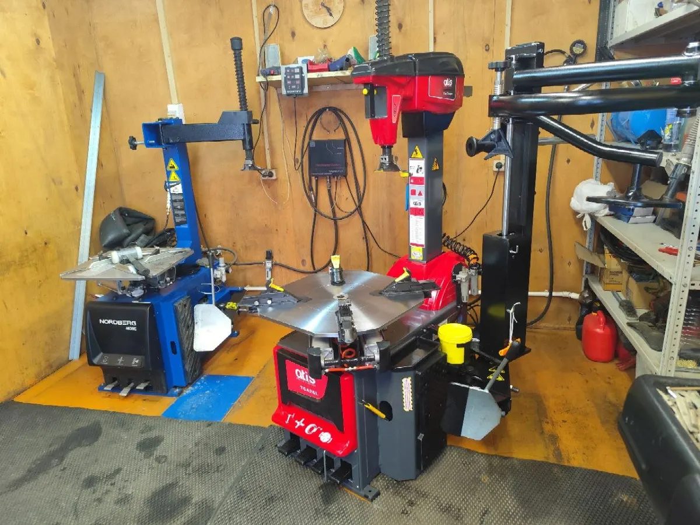
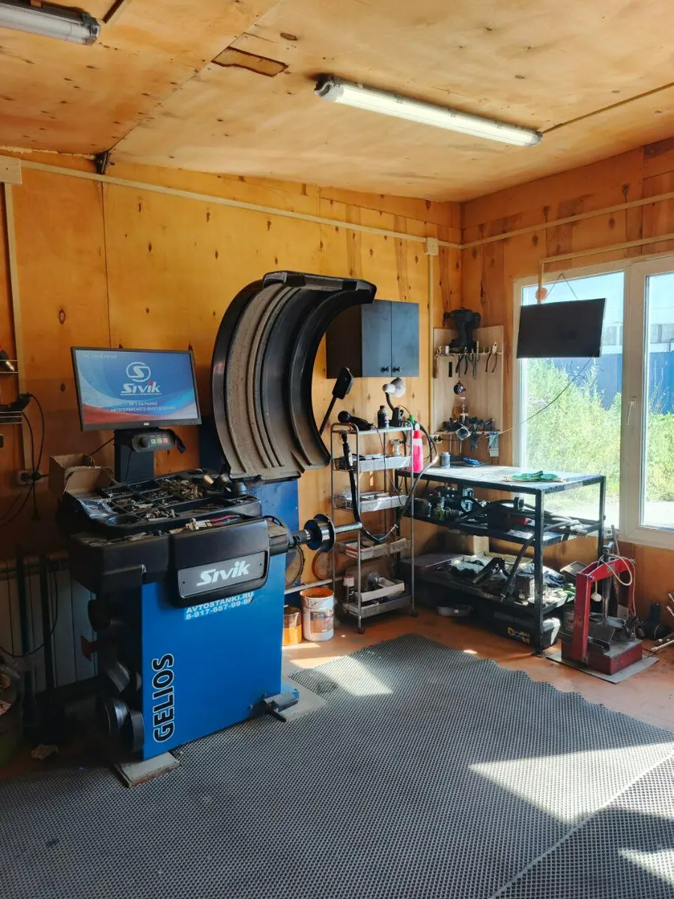
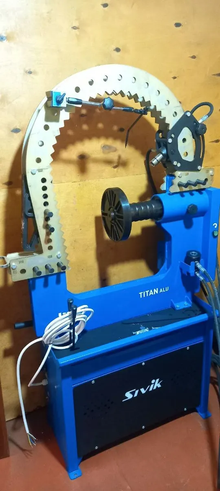

Шиномонтаж · Йошкар-Ола
Доктор шин: шиномонтаж и правка дисков в Йошкар-Оле
Шиномонтаж, балансировка, вулканизация и правка дисков. Выезжаем, если колесо встало. Работаем каждый день с 8 до 19.
- Каждый день с 08:00 до 19:00, без выходных
- Правка дисков - от 1000 ₽
- Выездной шиномонтаж и вулканизация

Работы и цены
Цена зависит от размера колёс и вида работ. Сумму назовём по телефону до начала работы.
Шиномонтаж
- Переобуть все колёсаот 1520 до 5999 ₽ - по размеру и типу шинуточнить
- Балансировка колёсна стендеуточнить
- Вулканизацияуточнить
Диски
- Правка дисковот 1 000 ₽
- Прокатка дисковуточнить
- Выездной шиномонтажпо телефонууточнить
Спросите сумму по телефону до того, как колёса снимут.
Как проходит визит
- 01
Позвоните
Скажите размер колёс и что нужно: переобуть, отбалансировать, поправить диск.
- 02
Приезжайте
Ул. Машиностроителей, 76Б, ежедневно с 08:00 до 19:00. Рядом есть Wi-Fi, пока ждёте.
- 03
Колесо на станок и стенд
Перебортировка, правка диска, вулканизация, балансировка - по вашей задаче.
- 04
Проверьте и забирайте
Сумму называем заранее, чтобы в конце не было неожиданностей.



Что есть на сервисе
Работаем каждый день
Ежедневно с 08:00 до 19:00, выходных нет. Перед выездом лучше позвонить.
Берёмся за сложные случаи
Правка и ремонт дисков, вулканизация, колёса, которые другие не берут - уточните по телефону.
Выезжаем к вам
Выездной шиномонтаж: если колесо встало в дороге, позвоните.
Гарантия на работу
Работы выполняем с гарантией - условия уточните по телефону.
Отзывы с Яндекс.Карт
«Это Докторшин, Если здесь не сделают, то нигде не сделают, даже если вообще шину починить нельзя, то будут бухтеть, но сделают, Сам проверял.»
Roman Sobolev · 11 марта
«Приехал с треснутым диском, починили качественно аккуратно почти не заметно, сделали на совесть по цене приемлимо, рекомендую»
Родион Кузьминых · 5 мая
«Был в городе проездом, пробил колесо, обратился за помощью. Решили проблему качественно и оперативно. Одним словом Мастера своего дела!»
Сергей Брандис · 8 марта 2025
Отзывы с карточки на Яндекс.Картах, без правок.
Частые вопросы
Какие работы делаете?
Шиномонтаж, балансировка, вулканизация, правка и прокатка дисков, выездной шиномонтаж.
Сколько стоит переобуть колёса?
Переобуть все колёса - от 1520 до 5999 ₽, в зависимости от размера и типа шин. Правка диска - от 1000 ₽. Точную сумму назовём по звонку.
Чините диски?
Да, правка и прокатка дисков. Привозите диск - посмотрим и назовём цену.
Где вы находитесь?
Ул. Машиностроителей, 76Б, Йошкар-Ола. Маршрут есть на Яндекс.Картах.
Позвоните - подскажем, как подъехать
- Адрес
- ул. Машиностроителей, 76Б, Йошкар-Ола
- Часы
- Ежедневно 08:00-19:00
- Телефон
- +7 (902) 465-18-48